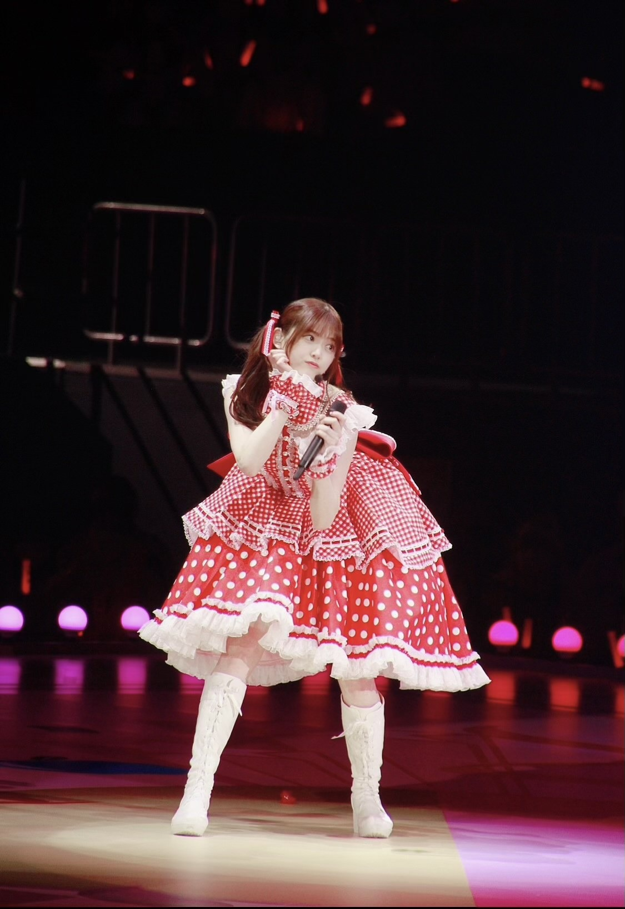
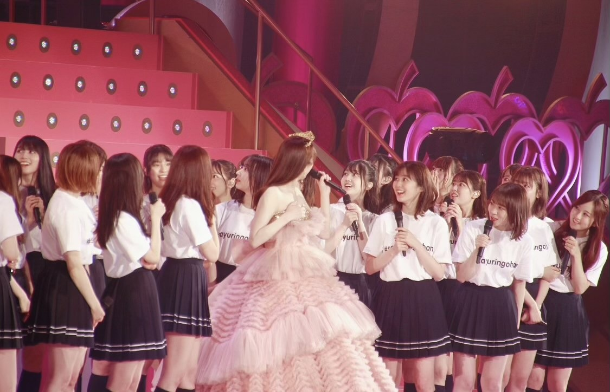
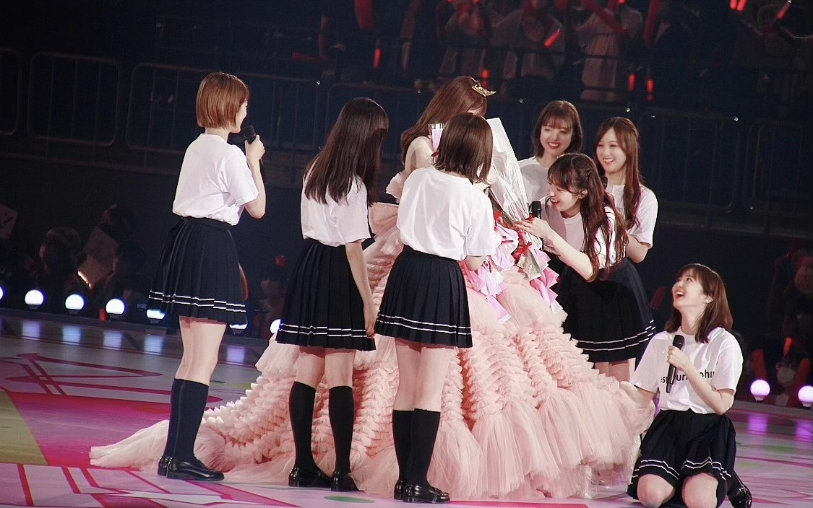

2021/0713Tueありがとうっ(o・・o)
松村沙友理です
本日7月13日をもちまして
乃木坂46を卒業します。
たくさんの応援ありがとうございました。
秋元先生に書いてもらった
さ〜ゆ〜Ready?の歌詞の通り
完全燃焼できました！
みなさんのおかげで
幸せなアイドル人生でした。
乃木坂46の一員であったことを誇りに
さゆりんご頑張ります
これからも応援よろしくお願いします。
自分の思いの丈は
卒業記念写真集の
ロングインタビューと
手書きのメッセージに込めました。
ここでは、言いづらい事も
全部詰め込みました。
手に取って読んでくださる方に
伝わりますように
本当にありがとうございました。
個人のHPも開設しました。
よろしくお願いします！
またお会いできる日を楽しみにしております♡





2021/07/13 23:59
コメント(596)
まちゅ卒業おめでとう
可愛いらしいまちゅにいつも癒されました！ 卒業後も応援してます！大好きです ❤️
可愛いらしいまちゅにいつも癒されました！ 卒業後も応援してます！大好きです ❤️
乃木坂で10年間お疲れ様でした。
まちゅに出会えて幸せだったと多くのファンが思っています。
まちゅの乃木坂を、メンバーを、ファンを、スタッフを、バナナマンさんを想う気持ちは、みんなに伝わっていると思います。
これからは松村沙友理という一人の人間として、素敵な人と出会い、幸せになられることを願ってます。
あと、これからも一緒に乃木坂を応援しましょう！
お疲れさまでした。
まちゅに出会えて幸せだったと多くのファンが思っています。
まちゅの乃木坂を、メンバーを、ファンを、スタッフを、バナナマンさんを想う気持ちは、みんなに伝わっていると思います。
これからは松村沙友理という一人の人間として、素敵な人と出会い、幸せになられることを願ってます。
あと、これからも一緒に乃木坂を応援しましょう！
お疲れさまでした。
まちゅ卒業おめでとう
最後の最後までSHOWROOM配信してくれてありがとう ❤️
写真集買ってまちゅからのたくさんのメッセージ読んで涙がたくさん流れました。
私たちにはわからない辛いことや悩みもたくさんあったと思うのに今日まで頑張ってくれて本当にありがとう♡
御三家として乃木坂を引っぱって、たくさんの道を切り開いてきてくれてありがとう♡
これからも私の中で1番のアイドルはさゆりんご です！
これは一生変わりません！！
乃木坂46ではなく、ただの松村沙友理になったまちゅのこともずっとずっと応援します✨
ほんとうに乃木坂に加入してくれて、10年がんばってくれてありがとう ❤️
ずっとずっと大好きで憧れのプリンセスです✨
最後の最後までSHOWROOM配信してくれてありがとう ❤️
写真集買ってまちゅからのたくさんのメッセージ読んで涙がたくさん流れました。
私たちにはわからない辛いことや悩みもたくさんあったと思うのに今日まで頑張ってくれて本当にありがとう♡
御三家として乃木坂を引っぱって、たくさんの道を切り開いてきてくれてありがとう♡
これからも私の中で1番のアイドルはさゆりんご です！
これは一生変わりません！！
乃木坂46ではなく、ただの松村沙友理になったまちゅのこともずっとずっと応援します✨
ほんとうに乃木坂に加入してくれて、10年がんばってくれてありがとう ❤️
ずっとずっと大好きで憧れのプリンセスです✨
さゆりん本当にお疲れ様
辛いこともあったと思うけど、普通の人なら逃げたくなるようなことにも一生懸命戦ったから今のさゆりんがあるんだと思います。そんな自分をたくさん褒めてあげてね！
私が乃木坂を知ったのはまいやんの卒業コンサートが延期になることが発表された頃くらいからだから、少しの時間しか応援できなかったけど、いつもまいやん率いる他のメンバーの温かさに触れてニコニコしているさゆりんが私の生きがいでした！
本当に応援していて楽しかったです！
人生の1番楽しい青春を捨ててまで乃木坂でたくさんの笑顔を届けてくれてありがとう。
今までたくさんのしあわせをありがとう。
これからの人生では私達にくれたしあわせの数だけさゆりんがしあわせになれますよーに♡
これからもずっと大好きです！！
辛いこともあったと思うけど、普通の人なら逃げたくなるようなことにも一生懸命戦ったから今のさゆりんがあるんだと思います。そんな自分をたくさん褒めてあげてね！
私が乃木坂を知ったのはまいやんの卒業コンサートが延期になることが発表された頃くらいからだから、少しの時間しか応援できなかったけど、いつもまいやん率いる他のメンバーの温かさに触れてニコニコしているさゆりんが私の生きがいでした！
本当に応援していて楽しかったです！
人生の1番楽しい青春を捨ててまで乃木坂でたくさんの笑顔を届けてくれてありがとう。
今までたくさんのしあわせをありがとう。
これからの人生では私達にくれたしあわせの数だけさゆりんがしあわせになれますよーに♡
これからもずっと大好きです！！
今まで本当にありがとうございまっちゅん！
大変で辛かったりした時もあったと思うけど、そこから立ち直って前を向いてアイドル松村沙友理をしっかりと頑張ってくれて嬉しかったです。素敵な笑顔、かわいい声、大食い、涙もろいところ、モデルさんモードのかっこいいところなどいっぱいのいいところあるまちゅならこれからも色んなところで素敵な姿を見れるかなあって思ってるから、これからも応援続けていきます！！
本当にまちゅきっかけで、乃木坂に出会えて、乃木坂を好きになって、乃木坂46松村沙友理を好きになって、素敵な日々でした！！
ありがとうございました！！！！そして、アイドル松村沙友理とはさよなら。いや、またねー！
元気に健康なまちゅでいてねー！！
何度もだけど、ありがとうございまっちゅん！！！！
大変で辛かったりした時もあったと思うけど、そこから立ち直って前を向いてアイドル松村沙友理をしっかりと頑張ってくれて嬉しかったです。素敵な笑顔、かわいい声、大食い、涙もろいところ、モデルさんモードのかっこいいところなどいっぱいのいいところあるまちゅならこれからも色んなところで素敵な姿を見れるかなあって思ってるから、これからも応援続けていきます！！
本当にまちゅきっかけで、乃木坂に出会えて、乃木坂を好きになって、乃木坂46松村沙友理を好きになって、素敵な日々でした！！
ありがとうございました！！！！そして、アイドル松村沙友理とはさよなら。いや、またねー！
元気に健康なまちゅでいてねー！！
何度もだけど、ありがとうございまっちゅん！！！！
さゆりん。卒業ほんとにほんとにおめでとう
伝えたいことが沢山あるんだけど、とてもじゃないけど書ききれないから振り絞って書くよ。
約1年間。さゆりん推しとしてやって来ました。今思い返してみると
楽しい思い出ばっかりです。こんなに幸せな毎日をくれてほんとにありがとう。卒業してもまたきっと会えるかな。
さゆりんにはほんとに支えてもらって、辛くなったらさゆりんのことを思い浮かべて弾き返してました。高校生の何もない自分に、こんなに楽しい毎日があることを教えてくれました。いっぱい笑っていっぱい泣いて、でもやっぱり笑って。ほんとに幸せでした。
そんなさゆりんを僕はこう呼びたいです。
人生の宝物
そう言わせてください。
さゆりん。約10年間ほんとにほんとにお疲れ様でした。
辛いこともあったかもしれないけど、今こうして完全燃焼しましたって言ってくれてほんとに嬉しいです。さゆりんが幸せなら僕はもうそれで十分です。いつもいつも元気をくれてありがとう。
さゆりん楽しい時間を共有した時間絶対に忘れないよ。
最後にもう一度言わせてください。
ありがとう！！！！
今まででありがとうございまっちゅん
そしてこれからもがんばり〜まっちゅ〜ん！！！
伝えたいことが沢山あるんだけど、とてもじゃないけど書ききれないから振り絞って書くよ。
約1年間。さゆりん推しとしてやって来ました。今思い返してみると
楽しい思い出ばっかりです。こんなに幸せな毎日をくれてほんとにありがとう。卒業してもまたきっと会えるかな。
さゆりんにはほんとに支えてもらって、辛くなったらさゆりんのことを思い浮かべて弾き返してました。高校生の何もない自分に、こんなに楽しい毎日があることを教えてくれました。いっぱい笑っていっぱい泣いて、でもやっぱり笑って。ほんとに幸せでした。
そんなさゆりんを僕はこう呼びたいです。
人生の宝物
そう言わせてください。
さゆりん。約10年間ほんとにほんとにお疲れ様でした。
辛いこともあったかもしれないけど、今こうして完全燃焼しましたって言ってくれてほんとに嬉しいです。さゆりんが幸せなら僕はもうそれで十分です。いつもいつも元気をくれてありがとう。
さゆりん楽しい時間を共有した時間絶対に忘れないよ。
最後にもう一度言わせてください。
ありがとう！！！！
今まででありがとうございまっちゅん
そしてこれからもがんばり〜まっちゅ〜ん！！！
ご卒業おめでとうございます！
さゆりんごの笑顔に何度も救われました！
まちゅと出会えて、推せた期間はとてつもなく幸せで楽しかったです！
これからの活動も全力で応援させてもらいます！！
ずっとずっと大好きです！！
アイドルになってくれてありがとう。
松村沙友理さんのこれからの人生に幸あれ！
さゆりんごの笑顔に何度も救われました！
まちゅと出会えて、推せた期間はとてつもなく幸せで楽しかったです！
これからの活動も全力で応援させてもらいます！！
ずっとずっと大好きです！！
アイドルになってくれてありがとう。
松村沙友理さんのこれからの人生に幸あれ！
まちゅ卒業おめでとう！
まちゅの笑顔を見ると自然と笑顔になれて、本当に10年間いろいろなことがあったかもしれないけど、乃木坂46に居てくれて、いろいろな人たちに元気を与えてくれてありがとうございました！
これからも応援してます！
まちゅの笑顔を見ると自然と笑顔になれて、本当に10年間いろいろなことがあったかもしれないけど、乃木坂46に居てくれて、いろいろな人たちに元気を与えてくれてありがとうございました！
これからも応援してます！
たくさんのしあわせをありがとうございました
こんなに素敵で可愛いさゆりんごを応援できたことがずっとずっと私の誇りです‼︎
これからもずっと大好きです！本当にお疲れ様でした！
こんなに素敵で可愛いさゆりんごを応援できたことがずっとずっと私の誇りです‼︎
これからもずっと大好きです！本当にお疲れ様でした！
10年間お疲れ様でした。
沢山の笑顔と涙と幸せを多くの人が沙友理さんから受け取ったと思います。
私も“乃木どこ？”“乃木中”“たまに当たったライブ”諸々で、ニヤニヤグとシュグシュとポカポカをいただきました。
これからもご活躍を心より願っております。
乃木坂46松村沙友理を本当にありがとう！
ご自愛ください。
沢山の笑顔と涙と幸せを多くの人が沙友理さんから受け取ったと思います。
私も“乃木どこ？”“乃木中”“たまに当たったライブ”諸々で、ニヤニヤグとシュグシュとポカポカをいただきました。
これからもご活躍を心より願っております。
乃木坂46松村沙友理を本当にありがとう！
ご自愛ください。
沙友理ちゃん、卒業おめでとう！
先日最後のファンレターも送らせてもらいました(/ _ ; )
沙友理ちゃんがきっかけで乃木坂を好きになって、6年間ずっとファンでいて楽しかったし本当に幸せでした。何度も沙友理ちゃんに救われました。本当にありがとう。
そして今までお疲れ様でした。きっとまだ忙しいと思うけど、落ち着いたらゆっくり休んでください。大好き
先日最後のファンレターも送らせてもらいました(/ _ ; )
沙友理ちゃんがきっかけで乃木坂を好きになって、6年間ずっとファンでいて楽しかったし本当に幸せでした。何度も沙友理ちゃんに救われました。本当にありがとう。
そして今までお疲れ様でした。きっとまだ忙しいと思うけど、落ち着いたらゆっくり休んでください。大好き
まっちゅん、ほんとうにほんとうにお疲れ様！
そして卒業おめでとう！
推しメンの卒業は本当に悲しいけれど、まっちゅんには数え切れないくらいの笑顔と幸せをもらいました。
まっちゅんはほんとうにほんとうに最高のアイドルでした！
たぶん死ぬまで俺の中でアイドルといえばまっちゅんです！
これからも応援してます！！
そして卒業おめでとう！
推しメンの卒業は本当に悲しいけれど、まっちゅんには数え切れないくらいの笑顔と幸せをもらいました。
まっちゅんはほんとうにほんとうに最高のアイドルでした！
たぶん死ぬまで俺の中でアイドルといえばまっちゅんです！
これからも応援してます！！
まちゅ卒業おめでとう
今まで乃木坂で頑張ってくれて本当にありがとう
まちゅに出会えて良かった
マジで素晴らしいアイドルでした
これからもまちゅの活躍を楽しみにしてます
ずっと応援するよー
今まで乃木坂で頑張ってくれて本当にありがとう
まちゅに出会えて良かった
マジで素晴らしいアイドルでした
これからもまちゅの活躍を楽しみにしてます
ずっと応援するよー
松村沙友理さん卒業おめでとうございます。
今までたくさんの笑顔届けてくれてありがとう！
乃木中ではツッコミたくなるような存在でいつも楽しませていただきました笑
またさゆりんご軍団ライブもとても良かったです
ほんまに今までありがとう
またいつか会える日を楽しみにしてます
さっぴより
今までたくさんの笑顔届けてくれてありがとう！
乃木中ではツッコミたくなるような存在でいつも楽しませていただきました笑
またさゆりんご軍団ライブもとても良かったです
ほんまに今までありがとう
またいつか会える日を楽しみにしてます
さっぴより
さゆりん！ お疲れ様でした✨
いつもキラキラ輝いていて、落ち込んでいる時にいっつも元気もらってました
これからの活躍を期待しています♡
本当にお疲れ様でした
いつもキラキラ輝いていて、落ち込んでいる時にいっつも元気もらってました
これからの活躍を期待しています♡
本当にお疲れ様でした
まっちゅん、乃木坂卒業おめでとうございます✨✨
乃木坂活動10年間お疲れ様でした✨✨
まっちゅん、乃木坂に入ってくれて本当にありがとうございました✨✨
まっちゅんが乃木坂にいてたくさん応援することができて嬉しかったです ✨
まっちゅんの笑顔を見れることが本当に嬉しかったです㊗️✨
たくさんの笑顔をありがとうございました✨✨
乃木坂を卒業するのは寂しいですがまっちゅんの活躍これからも楽しみにしています✨✨
今までありがとうございました✨✨
でもやはり寂しいです、ですがさよならは言いません。
最後に一言ありがとうやっぱ乃木坂だな✨✨
乃木坂活動10年間お疲れ様でした✨✨
まっちゅん、乃木坂に入ってくれて本当にありがとうございました✨✨
まっちゅんが乃木坂にいてたくさん応援することができて嬉しかったです ✨
まっちゅんの笑顔を見れることが本当に嬉しかったです㊗️✨
たくさんの笑顔をありがとうございました✨✨
乃木坂を卒業するのは寂しいですがまっちゅんの活躍これからも楽しみにしています✨✨
今までありがとうございました✨✨
でもやはり寂しいです、ですがさよならは言いません。
最後に一言ありがとうやっぱ乃木坂だな✨✨
さゆりちゃん卒業おめでとう！！
そして10年間お疲れ様！！！
最初から最後まで変わらず笑顔でアイドルしてくれて有難う！笑ってるさゆりちゃんが大好きです！！！ 初めての推しがさゆりちゃんでよかった(^^)
初めての推しがさゆりちゃんでよかった(^^)
そして10年間お疲れ様！！！
最初から最後まで変わらず笑顔でアイドルしてくれて有難う！笑ってるさゆりちゃんが大好きです！！！
これからも応援しますよ。
よろしくね！
おつかれさまです。
そして、ありがとう。
この10年、まちゅに出会えてすっごく楽しかった
これからも応援していくので、
楽しいこといっぱい期待しています！！
そして、ありがとう。
この10年、まちゅに出会えてすっごく楽しかった
これからも応援していくので、
楽しいこといっぱい期待しています！！
10年間、お疲れ様でした！
そして本当にありがとうございました！
なかなか感謝をお伝えすることができなかったのですが、あなたを推すことができて幸せだったと心の底から思っています！
アイドルを全く知らなかった僕と出会ってくれてありがとうございます！本当に苦しい時にあなたの屈託のない笑顔に何度も救われました！
僕にとって最初で最後の推しなので、乃木坂46の松村沙友理さんとなっても変わらず応援し続けます！
表舞台に立ち続けることを選んでくださり、とても感謝しています！
ただ無理はなさらず、動画健やかにいてくださいね！
あなたがこれからも変わらない屈託のない笑顔でいられること、そしてまたどこかでお会いできることを祈っています！
長くなりましたが、本当に10年間ありがとうございました！！
これからの活動を楽しみに、僕も笑顔で明るく生きていきます！
そして本当にありがとうございました！
なかなか感謝をお伝えすることができなかったのですが、あなたを推すことができて幸せだったと心の底から思っています！
アイドルを全く知らなかった僕と出会ってくれてありがとうございます！本当に苦しい時にあなたの屈託のない笑顔に何度も救われました！
僕にとって最初で最後の推しなので、乃木坂46の松村沙友理さんとなっても変わらず応援し続けます！
表舞台に立ち続けることを選んでくださり、とても感謝しています！
ただ無理はなさらず、動画健やかにいてくださいね！
あなたがこれからも変わらない屈託のない笑顔でいられること、そしてまたどこかでお会いできることを祈っています！
長くなりましたが、本当に10年間ありがとうございました！！
これからの活動を楽しみに、僕も笑顔で明るく生きていきます！
まちゅ！ほんとにほんとにありがとう！！そしてお疲れ様でした！！
まちゅと出会えていなかったら乃木坂を好きになることもなかったかもしれないし、最初から最後までまちゅを推せて幸せでした！私の人生を変えてくれてありがとう まちゅに出会えて心から幸せでした！これから先、辛いことがあるかもしれません。まちゅはいつも泣くのを我慢しているように思って少し心配です。無理はしないでください。泣きたい時は沢山泣いて大丈夫ですよ！まちゅはよく出来損ない人間だとかこんな私をとか言うけど、まちゅは本当にすごいよ！まちゅの笑顔、周りの人をよく見てるところ、人思いなところ、プロデュース力、沢山良いところがあります！！まちゅはまちゅらしく好きなこと、楽しいことをして幸せでいてほしい！これが私の願いです！これからもまちゅが笑って過ごせますように！ずっと大好きです！これからも応援させてください！！まちゅに出会えて本当に幸せでした！乃木坂に入ってくれてありがとう！沢山頑張ってくれてありがとう！本当にお疲れ様でした！！
まちゅに出会えて心から幸せでした！これから先、辛いことがあるかもしれません。まちゅはいつも泣くのを我慢しているように思って少し心配です。無理はしないでください。泣きたい時は沢山泣いて大丈夫ですよ！まちゅはよく出来損ない人間だとかこんな私をとか言うけど、まちゅは本当にすごいよ！まちゅの笑顔、周りの人をよく見てるところ、人思いなところ、プロデュース力、沢山良いところがあります！！まちゅはまちゅらしく好きなこと、楽しいことをして幸せでいてほしい！これが私の願いです！これからもまちゅが笑って過ごせますように！ずっと大好きです！これからも応援させてください！！まちゅに出会えて本当に幸せでした！乃木坂に入ってくれてありがとう！沢山頑張ってくれてありがとう！本当にお疲れ様でした！！
まちゅと出会えていなかったら乃木坂を好きになることもなかったかもしれないし、最初から最後までまちゅを推せて幸せでした！私の人生を変えてくれてありがとう
まちゅ10年ほんとにお疲れ様でした〜〜
乃木坂を好きになったきっかけはまちゅのキャラを好きになったからでした笑笑アイドルの中のアイドル！そんなまちゅを見てから乃木坂46を知ってファンになりました笑笑歳上でもあり一期生でもありのお姉さんでみんなにも優しくて独特の感性のまちゅが居てくれたからこそ今のグループがあると思います！！
卒業しちゃってもまちゅ推しは変わりません笑笑
いつでも笑顔でアイドルのまちゅをいつも応援してます
まだまだアイドルのまちゅを見せてください！！！
乃木坂を好きになったきっかけはまちゅのキャラを好きになったからでした笑笑アイドルの中のアイドル！そんなまちゅを見てから乃木坂46を知ってファンになりました笑笑歳上でもあり一期生でもありのお姉さんでみんなにも優しくて独特の感性のまちゅが居てくれたからこそ今のグループがあると思います！！
卒業しちゃってもまちゅ推しは変わりません笑笑
いつでも笑顔でアイドルのまちゅをいつも応援してます
まだまだアイドルのまちゅを見せてください！！！
松村沙友理様。長い間ありがとうございました。お疲れさまでした。今日も(正確にはもう昨日ですが)ファンのために夜遅くまで配信ありがとうございました。まっちゅんは本当に素敵です。かわいいです。
なのでこれからも応援します。新ドラマ観ましたよ！公式サイトブックマークしましたよ！イマドキッも聴きますよ！引き続きよろしくお願いします！
なのでこれからも応援します。新ドラマ観ましたよ！公式サイトブックマークしましたよ！イマドキッも聴きますよ！引き続きよろしくお願いします！
さゆりちゃん、卒業おめでとう。
卒業の瞬間、その直前まで配信で素敵な思い出を作ってくれてありがとう！
夏のFree&Easyの握手会で初めて会って、そこからずっと大好きで思い出がたくさんだから、今日のこの瞬間を迎えるのが寂しくないと言ったら嘘になるけど、さゆりちゃんのおかげでたくさん元気をもらい、笑顔になれました！
乃木坂46に入ってくれて、本当にありがとう！
これからもずっとずっと大好きです！！
今後の活動も楽しみにしてます！これからもずっと応援してます^ - ^
プロミス・シンデレラ、予想以上に面白くて、早速次回が楽しみなので、本編も、シンデレラコンプレックスも楽しみにしてるね！
また、まちゅに会える日が来ると嬉しいな^ - ^
本当に10年間お疲れ様でした！！
卒業の瞬間、その直前まで配信で素敵な思い出を作ってくれてありがとう！
夏のFree&Easyの握手会で初めて会って、そこからずっと大好きで思い出がたくさんだから、今日のこの瞬間を迎えるのが寂しくないと言ったら嘘になるけど、さゆりちゃんのおかげでたくさん元気をもらい、笑顔になれました！
乃木坂46に入ってくれて、本当にありがとう！
これからもずっとずっと大好きです！！
今後の活動も楽しみにしてます！これからもずっと応援してます^ - ^
プロミス・シンデレラ、予想以上に面白くて、早速次回が楽しみなので、本編も、シンデレラコンプレックスも楽しみにしてるね！
また、まちゅに会える日が来ると嬉しいな^ - ^
本当に10年間お疲れ様でした！！
さゆりちゃん10年間本当にお疲れ様でした！
そして卒業おめでとうございます！！
さゆりちゃんに出会えて本当に幸せな日々だったし、
とってもとっても楽しかったです！
こんなにもずっと好きでいさせてくれてありがとう❤︎
そしてこれからもずっとずっと大好きです！
さゆりちゃんがいるから毎日頑張れてるよ〜〜！
またいつか会えることを信じてます❤︎
これからもさゆりちゃんが幸せで笑顔で溢れた日々を送れることを心から祈っています！
乃木坂46に入ってくれて出会ってくれて沢山笑顔を届けてくれて本当に本当にありがとうございました！
そして卒業おめでとうございます！！
さゆりちゃんに出会えて本当に幸せな日々だったし、
とってもとっても楽しかったです！
こんなにもずっと好きでいさせてくれてありがとう❤︎
そしてこれからもずっとずっと大好きです！
さゆりちゃんがいるから毎日頑張れてるよ〜〜！
またいつか会えることを信じてます❤︎
これからもさゆりちゃんが幸せで笑顔で溢れた日々を送れることを心から祈っています！
乃木坂46に入ってくれて出会ってくれて沢山笑顔を届けてくれて本当に本当にありがとうございました！
さゆりちゃん卒業おめでとう。
乃木坂46として10年間お疲れ様でした。
出会えて本当にしあわせです。ありがとう。
これからもよろしくお願いしまっちゅーん！
とってもだいすきです。
乃木坂46として10年間お疲れ様でした。
出会えて本当にしあわせです。ありがとう。
これからもよろしくお願いしまっちゅーん！
とってもだいすきです。
10年間お疲れ様でした！
今まで乃木坂46に居続けてくれてありがとう。
これからの人生苦しいこともいっぱいあると思うけど乃木坂にいた時のことを思い出して頑張ってください！！
今まで乃木坂46に居続けてくれてありがとう。
これからの人生苦しいこともいっぱいあると思うけど乃木坂にいた時のことを思い出して頑張ってください！！
まっちゅん、乃木坂卒業おめでとうございます✨✨
乃木坂活動10年間お疲れ様でした✨✨
まっちゅん、乃木坂に入ってくれて本当にありがとうございました✨✨
まっちゅんが乃木坂にいてたくさん応援することができて嬉しかったです ✨
たくさん楽しいことや辛いことがたくさんあったと思いますが卒業まで頑張りましたね、大切な思い出と経験が作れましたね✨✨
まっちゅんの笑顔を見れることが本当に嬉しかったです㊗️✨
たくさんの笑顔をありがとうございました✨✨
乃木坂を卒業するのは寂しいですがまっちゅんの活躍これからも楽しみにしています✨✨
今までありがとうございました✨✨
でもやはり寂しいです、ですがさよならは言いません。
最後に一言ありがとうやっぱ乃木坂だな✨✨
乃木坂活動10年間お疲れ様でした✨✨
まっちゅん、乃木坂に入ってくれて本当にありがとうございました✨✨
まっちゅんが乃木坂にいてたくさん応援することができて嬉しかったです ✨
たくさん楽しいことや辛いことがたくさんあったと思いますが卒業まで頑張りましたね、大切な思い出と経験が作れましたね✨✨
まっちゅんの笑顔を見れることが本当に嬉しかったです㊗️✨
たくさんの笑顔をありがとうございました✨✨
乃木坂を卒業するのは寂しいですがまっちゅんの活躍これからも楽しみにしています✨✨
今までありがとうございました✨✨
でもやはり寂しいです、ですがさよならは言いません。
最後に一言ありがとうやっぱ乃木坂だな✨✨
お疲れ様でした！！
こちらこそ乃木坂46に入ってくれてありがとうございます。
その笑顔と元気でこれからも頑張ってください！
さゆりんご軍団共に今後の活躍期待してます！
こちらこそ乃木坂46に入ってくれてありがとうございます。
その笑顔と元気でこれからも頑張ってください！
さゆりんご軍団共に今後の活躍期待してます！
さゆりんありがとう
これからも応援するよ
これからも応援するよ
さゆりん卒業おめでとう！約10年間本当にお疲れ様でした！乃木坂46を引っ張ってくれて、頑張ってくれて本当にありがとうございまっちゅん 卒コン生で見れてホンマによかったよ！！！セットリストも演出も本当に感動しました！最後にさゆりんごパンチ貰いたかったな…また会える日が来ますように。もう乃木中とか歌番組でさゆりんを見れないのは寂しいけどずっと応援してます！さゆりん大好きです！
まちゅ卒業ほんとうにおめでとうございます！！
そして長い間、私たちファンのために頑張ってくれてほんとうにありがとう！！！
さゆりんご軍団を作ってくれてありがとう。らんぜをさゆりんご軍団に入れてくれてありがとう。さゆりんご軍団単独ライブの夢を諦めないでくれてありがとう。会場には行けなくて、配信だったけど念願のさゆりんご軍団単独ライブが見れてしあわせでした。そのあとの卒コンもまちゅらしくてとっても素敵でした！
いつになっても可愛くて可愛くて可愛いまちゅがこれからもずっと大好きです！！！！！！！！！
50年後のさゆりんご軍団ライブは絶対参戦します！！！！！
まちゅほんとうにお疲れ様でした。たくさんありがとう。
そして長い間、私たちファンのために頑張ってくれてほんとうにありがとう！！！
さゆりんご軍団を作ってくれてありがとう。らんぜをさゆりんご軍団に入れてくれてありがとう。さゆりんご軍団単独ライブの夢を諦めないでくれてありがとう。会場には行けなくて、配信だったけど念願のさゆりんご軍団単独ライブが見れてしあわせでした。そのあとの卒コンもまちゅらしくてとっても素敵でした！
いつになっても可愛くて可愛くて可愛いまちゅがこれからもずっと大好きです！！！！！！！！！
50年後のさゆりんご軍団ライブは絶対参戦します！！！！！
まちゅほんとうにお疲れ様でした。たくさんありがとう。
卒業おめでとうございます！！
さゆりちゃんがいたから乃木坂を好きになって、毎日幸せです！！
これからも応援してます！
だいすきです
さゆりちゃんがいたから乃木坂を好きになって、毎日幸せです！！
これからも応援してます！
だいすきです
仕事が辛くて悩んでいた時に「妥協じゃないです方向転換です」の一言でどれだけ笑ったかどれだけ救われたか。アイドルに対して無頓着だった自分が松村沙友理を知ってから人生は変わったような気がします。乃木坂46を飛び出てどんな活躍をしてくれるか、どんな景色を見せてくれるか楽しみです。これからも松村沙友理を応援していきます。10年間完走おつかれさまでした。大好きだよ。
沙友理ちゃん乃木坂46として10年間の活動本当にお疲れ様でした
沙友理ちゃんのエヘヘって笑顔にいつも救われていました。乃木坂を好きになって御三家推しになって、僕の心の片隅にはいつも御三家の3人がいてくれました。これで御三家は全員卒業しちゃったけど、乃木坂が好きであることに変わりはないし、これからも御三家推しであることに変わりありません。これからの沙友理ちゃんの活動も楽しみに応援し続けます 奈々未さんとも麻衣ちゃんともこれからも仲良くしてね(Ü)
本当に10年間お疲れ様でした！本当にありがとうございまっちゅん
｢それでも、御三家は永遠だから｣
沙友理ちゃんのエヘヘって笑顔にいつも救われていました。乃木坂を好きになって御三家推しになって、僕の心の片隅にはいつも御三家の3人がいてくれました。これで御三家は全員卒業しちゃったけど、乃木坂が好きであることに変わりはないし、これからも御三家推しであることに変わりありません。これからの沙友理ちゃんの活動も楽しみに応援し続けます 奈々未さんとも麻衣ちゃんともこれからも仲良くしてね(Ü)
本当に10年間お疲れ様でした！本当にありがとうございまっちゅん
｢それでも、御三家は永遠だから｣
本当に卒業おめでとう。
最後のライブ、あの素敵な空間に居られたことが幸せでした。
全てを包む温かい会場の空気感は、さゆりんそのものでした。
皆が観たかった「急斜面」も「からあげ姉妹」も「ひと夏の長さより」も「さ〜ゆ〜Ready?」も、もうあれで最後だったと思うと寂しくなりますが、これからもずっと応援しています。
10年間お疲れ様でした。次、またいつか会いましょう。
大好き
最後のライブ、あの素敵な空間に居られたことが幸せでした。
全てを包む温かい会場の空気感は、さゆりんそのものでした。
皆が観たかった「急斜面」も「からあげ姉妹」も「ひと夏の長さより」も「さ〜ゆ〜Ready?」も、もうあれで最後だったと思うと寂しくなりますが、これからもずっと応援しています。
10年間お疲れ様でした。次、またいつか会いましょう。
大好き
まだまだ新参者ではありますが、乃木坂46というグループを知る上で、また好きになる上できっかけを下さったのは松村さんです。もっと早く知っておけばよかったと後悔する次第ですが、松村さんと同じ時を過ごせて本当によかったと思います。松村さんと出会い与えて下さったきっかけを握りしめ、これからも乃木坂46を、松村沙友理を応援していきたいと思います。
短い間でしたが、まっちゅんありがとうございました。ご卒業おめでとうございます。松村さんのますますのご活躍を切に願います。
短い間でしたが、まっちゅんありがとうございました。ご卒業おめでとうございます。松村さんのますますのご活躍を切に願います。
乃木坂の沙友理ちゃんへ
とにかく10年間頑張って来られましたね、お疲れさまです
私は沙友理ちゃんのファンになってまだ2年目だけど、沙友理ちゃんという素敵な女の子に出会えたのは乃木坂46なのでありがとうと言いたいです、、
これからはただの、いや、1人の松村沙友理さんのファンとしてさらにさらに応援していきます！！！だから沙友理ちゃん、私たちファンと一緒にがんばりましょう☺️これからもよろしくね松村沙友理ちゃん 大好きーー！
とにかく10年間頑張って来られましたね、お疲れさまです
私は沙友理ちゃんのファンになってまだ2年目だけど、沙友理ちゃんという素敵な女の子に出会えたのは乃木坂46なのでありがとうと言いたいです、、
これからはただの、いや、1人の松村沙友理さんのファンとしてさらにさらに応援していきます！！！だから沙友理ちゃん、私たちファンと一緒にがんばりましょう☺️これからもよろしくね松村沙友理ちゃん 大好きーー！
また、会える日を
楽しみにしてます。
本当に、本当に、本当に、
良く頑張ったね。
ありがと。
ご卒業、おめでとう。
松村沙友理ちゃん、応援してます。
楽しみにしてます。
本当に、本当に、本当に、
良く頑張ったね。
ありがと。
ご卒業、おめでとう。
松村沙友理ちゃん、応援してます。
まちゅ本当に10年間ファンのみんなに笑顔や勇気、希望を届けてくれて本当にありがとうございました！まちゅはいつも周りを盛り上げてくれて乃木坂に必要不可欠な存在でした。まちゅの卒業はほんとに悲しいけどこれからの女優としての松村沙友理も見てみたいのでこれから先も全力で応援させていただきます！
さゆりんご軍団ライブと松村沙友理卒業コンサート配信という形でしたが見させてもらいました！最後の最後までまちゅはまちゅらしく、涙で画面見れないかと思ってたけどまちゅの人柄とかのお陰で笑顔で見送ることが出来ました！これから先も乃木坂という肩書きは消えないのでなんでも自信を持って色んなことに挑戦して欲しいなって思います！それと写真集を買うので見るのが楽しみです！！またどこかでお会い出来る機会があったら感想言います！笑
本当にアイドルの松村沙友理がだいすきでした。いつもキラキラしててニコニコしててずっと可愛かったです。10年間本当にお疲れ様でした！これから先のご活躍にも期待しています！！最後に！まちゅだいすき！！！！！！！
けんたっきー。より
さゆりんご軍団ライブと松村沙友理卒業コンサート配信という形でしたが見させてもらいました！最後の最後までまちゅはまちゅらしく、涙で画面見れないかと思ってたけどまちゅの人柄とかのお陰で笑顔で見送ることが出来ました！これから先も乃木坂という肩書きは消えないのでなんでも自信を持って色んなことに挑戦して欲しいなって思います！それと写真集を買うので見るのが楽しみです！！またどこかでお会い出来る機会があったら感想言います！笑
本当にアイドルの松村沙友理がだいすきでした。いつもキラキラしててニコニコしててずっと可愛かったです。10年間本当にお疲れ様でした！これから先のご活躍にも期待しています！！最後に！まちゅだいすき！！！！！！！
けんたっきー。より
さゆりちゃん
約１０年間お疲れ様でした♡
さゆりちゃんの笑顔がとっってもだいすきです。
プロデュース力またどこかで発揮してください！笑
これからも素敵な人生歩んでください
約１０年間お疲れ様でした♡
さゆりちゃんの笑顔がとっってもだいすきです。
プロデュース力またどこかで発揮してください！笑
これからも素敵な人生歩んでください
本当に10年間お疲れ様でした！！
また、元気にさゆりんごが見れる日を楽しみにしてます！
乃木坂46に入ってくれてありがとうございました！
また、元気にさゆりんごが見れる日を楽しみにしてます！
乃木坂46に入ってくれてありがとうございました！
さゆりん♡
さゆりん♡の笑顔は大阪の誇りや！
信じた道を真っ直ぐ行ったらええし
失敗したって思うたら戻ってみてもええんよ
まいやんも自由に楽しくいろんな発信を
してくれているし
まちゅも負けないでがんばってな。
握手も何回かしたし
ライブもたくさん見せてもらった
レコード大賞を取る夢まで叶えてもらったし。
感謝しています。
ご卒業ほんとうにおめでとうございます。
元気でやるんやで。
浪速の商人（あきんど）
さゆりん♡の笑顔は大阪の誇りや！
信じた道を真っ直ぐ行ったらええし
失敗したって思うたら戻ってみてもええんよ
まいやんも自由に楽しくいろんな発信を
してくれているし
まちゅも負けないでがんばってな。
握手も何回かしたし
ライブもたくさん見せてもらった
レコード大賞を取る夢まで叶えてもらったし。
感謝しています。
ご卒業ほんとうにおめでとうございます。
元気でやるんやで。
浪速の商人（あきんど）
沙友理ちゃん、10年間お疲れ様でした。
10年間ありがとう。
10年間ずっと沙友理ちゃんを推してこれてとてもとても幸せでした
沙友理ちゃんと出逢えて本当に良かったです
卒業してもずっとずっと、一生大好きです
沙友理ちゃんが宇宙で1番可愛いよ( ᵕ ᵕ̩̩ )♡
これからもよろしくね ♡
10年間ありがとう。
10年間ずっと沙友理ちゃんを推してこれてとてもとても幸せでした
沙友理ちゃんと出逢えて本当に良かったです
卒業してもずっとずっと、一生大好きです
沙友理ちゃんが宇宙で1番可愛いよ( ᵕ ᵕ̩̩ )♡
これからもよろしくね ♡
まちゅありがとう
本当に本当に綺麗で美しくて可愛かったです
これからも応援してます
乃木坂やめないでくれてありがとう。
入ってくれてありがとう。頑張ってくれてありがとう。
大好きです。
本当に本当に綺麗で美しくて可愛かったです
これからも応援してます
乃木坂やめないでくれてありがとう。
入ってくれてありがとう。頑張ってくれてありがとう。
大好きです。
まっちゅんお疲れ様でした、月並みですが今までありがとうございました!!
自分が二十歳の時に乃木坂がデビューして自分の二十代は乃木坂と共にあり、社会人になってから第2の青春を味会わせてもらった、素敵で最高の時間でした!!
これからは≪松村沙友理≫としてのあなたを応援しています!!完全燃焼!
自分が二十歳の時に乃木坂がデビューして自分の二十代は乃木坂と共にあり、社会人になってから第2の青春を味会わせてもらった、素敵で最高の時間でした!!
これからは≪松村沙友理≫としてのあなたを応援しています!!完全燃焼!
さゆりんご、最後の更新ありがとね〜m(_ _)m
この9年間、ほんまにお疲れ様！
さゆが卒業しても、乃木坂も、さゆも、応援し続けます！
内心はまだまだ卒業して欲しく無いけど、さゆが決めたことなので、全力で後押ししたいです！
なんとか出そうな涙をこらえて書いてます。
ほんまにお疲れ様でした！また、まいやんと共演する機会があると良いね！
この9年間、ほんまにお疲れ様！
さゆが卒業しても、乃木坂も、さゆも、応援し続けます！
内心はまだまだ卒業して欲しく無いけど、さゆが決めたことなので、全力で後押ししたいです！
なんとか出そうな涙をこらえて書いてます。
ほんまにお疲れ様でした！また、まいやんと共演する機会があると良いね！
貴方は天才的なアイドルでした。表で見せる愛嬌に癒され、優しさや素直さが愛おしく、そのままの内面に見えた貴方にも沢山思うことがあったという内面にも改めて惚れました。色んなことが思い出されてやはり寂しさも大きいですが、完全燃焼したやり残したことが無いと言える乃木坂46の松村沙友理さんを心から尊敬し褒め称えたいです。本当に良かったね。頑張ってくれてありがとう。素敵なものをたくさん見せてくれてありがとう。卒業おめでとう。大好きです。
今まで本当にありがとうございました
写真集いっぱい読みます！！！
ドラマも見させてもらいます！
これからもずっと応援しています
お疲れ様でした^ - ^
写真集いっぱい読みます！！！
ドラマも見させてもらいます！
これからもずっと応援しています
お疲れ様でした^ - ^


卒業おめでとうございます
私が初めてさゆりちゃんを知ったのは、ハルジオンが咲く頃の時のMVに映ったさゆりちゃんでした。
めっちゃ可愛くてその時からファンになりました
さゆりちゃんと握手したかったな〜
すごく後悔しています
だけどさゆりちゃんとどこかで会えるのを願っています
これからもずっとさゆりちゃんのことが大好きです